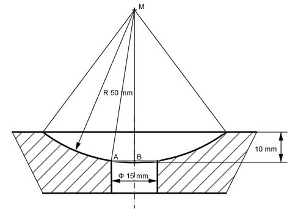

Aufgabe 381 Wie groß ist die Fläche A der Kugelpfanne, die als Aufnahme für ein Stützgelenk dient?  Gesamtfläche der Kugelpfanne (Kugelkappe): Agesamt = 2 * л * rKugel * hKugelpfanne = 2 * л * 50 mm * 10 mm Agesamt = 3 140 mm² Satz von Pythagoras im Dreieck ABM: AM = rKugel = 50 mm AB = 15 mm/2 = 7,5 mm AM² = AB² + BM² | -AB² BM² = AM² - AB² = 50² mm² - 7,5² mm² = 2 443,75 mm² |√ BM = 49,4 cm Kugelkappe von A aus zwischen der Bohrung: h = 50 mm - 49,4 mm = 0,6 mm AKappe = 2 * л * rKugel * h AKappe = 2 * л * 50 mm * 0,6 mm = 188 mm² A = Agesamt - AKappe A = 3 140 mm² - 188 mm² = 2 952 mm² = 29,5 cm²